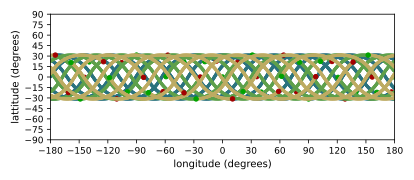

scenarioSatelliteConstellation
Overview
This scenario demonstrates how to set up a Walker-Delta constellation of satellites. Note that this scenario
uses the stand-alone Basilisk architecture rather than using the ‘’examples/FormationBskSim`` or examples/MultiSatBskSim
architectures for simultaneously simulating multiple spacecraft.
The script is found in the folder basilisk/examples and executed by using:
python3 scenarioSatelliteConstellation.py
When designing a satellite constellation, symmetry provides repeatable performance and makes design and operations simpler. One such symmetric constellation design methodology is the Walker constellation which consists of circular orbits in evenly spaced planes at a chosen inclination. Walker constellation layouts are fully specified by four parameters written as “i:T/P/F” where:
i = inclination angle
T = total number of satellites in the constellation
P = numer of orbit planes evenly spaced in node angle
F = relative spacing between satellites in adjacent orbit planes
In order to simulate the constellation a semi-major axis ‘a’ is also specified as an input. The total number of satellites T must be specified as an integer multiple of the number of planes P. The relative spacing F must be an integer between 0 and (P-1).
Illustration of Simulation Results
show_plots = True, a = 29994000, i = 56, T = 24, P = 3, F = 1
The default scenario is modelled after the Galileo constellation with Walker numbers 56:24/3/1 and a semi-major axis of 29,994 km.
Each line color corresponds to a different orbital plane, in this case 3 planes. Green circles mark the start of each of the 24 individual satellite’s ground tracks and a red circle marks their end.
Simulation Visualization In Vizard
To add a visualization of each spacecraft’s Earth nadir pointing, a cone aligned with the pointing direction
is created through the vizInterface:
vizSupport.createConeInOut(viz, fromBodyName=scList[i].ModelTag, toBodyName='earth', coneColor='teal',
normalVector_B=[1, 0, 0], incidenceAngle=30/macros.D2R, isKeepIn=False,
coneHeight=10.0, coneName='pointingCone')

- scenarioSatelliteConstellation.run(show_plots, a, i, T, P, F)[source]
The scenario can be run with the followings setups parameters:
- Parameters:
show_plots (bool) – Determines if the script should display plots
a (float) – semi-major axis of all satellites [m]
i (float) – orbital inclination [rad]
T (int) – total number of satellites
P (int) – number of equally spaced orbital planes
F (int) – phasing between satellites in adjacent places